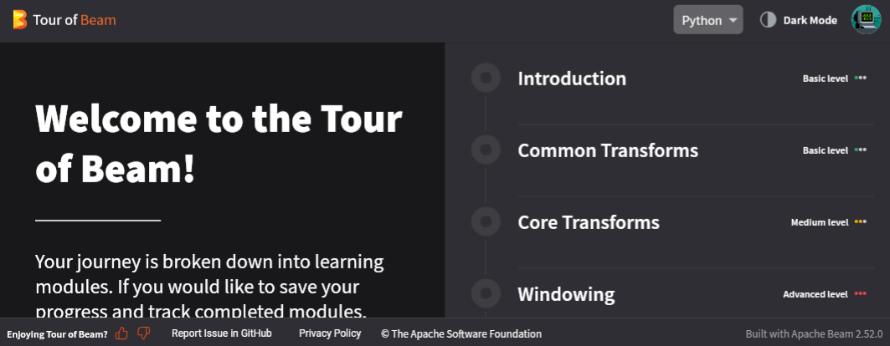

Apache Beam
What is Apache Beam¶
The Apache Beam Overview is a nice introduction to the framework. The very summarized explanation is it allows you to write code once, possibly in the language you already use, then run that code on "production" computation servers like Apache Flink, Spark, or Google Cloud Platform.
There's four main benefits to using Apache Beam:
-
The SDK forces you to more-or-less correctly use map-shuffle-reduce programming patterns that's ready to scale to the moon
 .
. -
First class support for streaming data via windowing and other functionality make it one of the few frameworks that could be integrated into your organization's "data firehose" to apply AI/ML, heuristics, etc. to intelligently flag or retain valuable information that may otherwise go undetected/missed because the volume of data is too much to save into S3 or elsewhere.
-
If your organization already runs a supported runner, then there's a fairly straightforward developer experience (DX) transitioning code you've written on your local computer to production. This DX is truly streamlined if you've got a dev cluster for your runner available that mimics your prod infrastructure.
Linkage with GCP Cloud Dataflow
Google is the primary contributor to Apache Beam as it underpins their Google Cloud Platform -- Cloud Dataflow service. Be aware that the transition from dev to prod may have more "sharp edges" when using runners that aren't Cloud Dataflow. That said, if you ARE using Cloud Dataflow then this transition is very smooth.
-
While potentially restrictive, the available inputs and outputs for Beam helps you and your organization avoid pitfalls of trying to pair a technology (e.g. traditional SQL database like PostgreSQL) that can't gracefully horizontally scale with code that can.
There's also some significant drawbacks, particularly for Python developers using self- hosted runners like an Apache Spark or Apache Flink cluster.
-
The execution model for "real" Beam pipelines, particularly those not written in Java, isn't as trivial as the SDK may imply. See the execution diagram below.
-
For Python devs, you're forever stuck with months old versions of Numpy, Pandas, and other dependencies as the
apache-beamPython SDK has exact versions (ctrl+f "pandas") it requires. -
The pain points of keeping the Python environment used by Dask/Prefect/Celery workers synced with local dev environments are magnified by the complex intertwining of Python, Java, and infrastructure orchestrated by Beam.
"Tour of Beam"¶
Right click and "open in new tab"
Tour of Beam is a fully hosted crash course maintained by the Beam authors and won't be running on our local system. Those that would like to try self-hosting are encouraged to instead look at the "Beam Playground source code" which includes a docker compose based deployment. As with the "Tour of Beam source code", the "Beam Playground" has a fully-hosted interactive browser-based interpreter to try out Apache Beam. "Tour of Beam" relies on "Beam Playground" and Google Cloud Platform (GCP).

'Real' Use of Apache Beam¶
Complex Infrastructure
While somewhat detailed and quirky, this workshop's code base and the previous sections demonstrate how Dask/Prefect and Celery can be deployed and used by a small team. This isn't really the case with Apache Beam. The "big data" Apache ecosystem projects like Flink, Spark, and Kafka are non-trivial to get running, much more effectively tune and maintain. The dataflow diagram below from the Beam authors hint at this significant infrastructure investment.
Example: Orchestrating Apache Flink¶
Apache Flink allows for parallel streaming processing of data from either files (batch) or true streaming (via message broker like Pub/Sub, Kafka, RabbitMQ, etc.).
Two ways for python developers to leverage Flink is either indirectly via Apache Beam or the native apache-flink library. For pros and cons of using Apache Beam, see this and this article by Deepak Nagaraj. The complexity highlighted in these article is aluded to by the SDK Harness Config docs for Apache Beam which shows the need to package, maintain, and troubleshoot custom docker images for each execution environment a beam pipeline may try to execute. See the excerpt of this complex workflow for basic Apache Beam tasks below.
{kind=link}